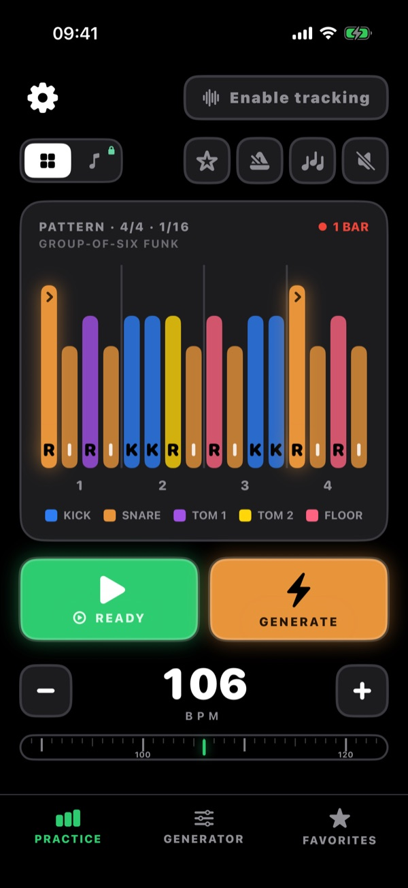
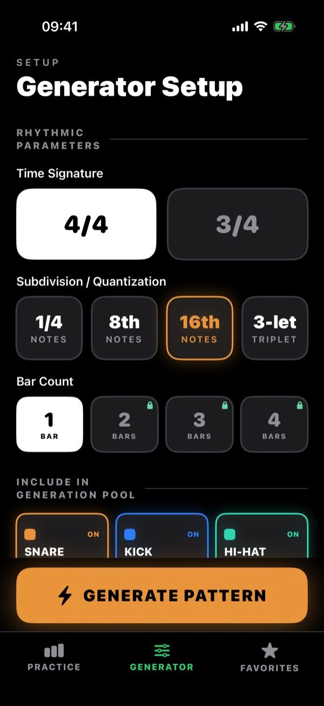
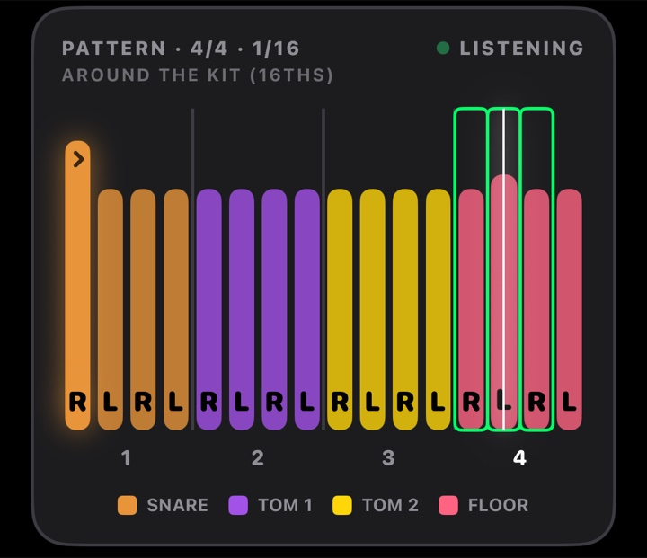
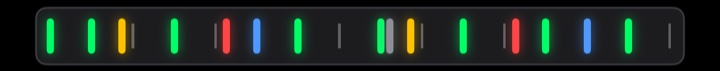

∞
Fills the generator can write
iPhone & iPad · iOS 26.5+
A drum practice app that writes new fills for your kit, works out the sticking, and scores every hit you play on a MIDI e-kit to the millisecond.
Generator, tracking and all 200 fills are free · No account · No ads · Works offline

What it does
One writes fills your hands can play. The other tells you, to the millisecond, whether you played them.
Set the grid and the engine writes a fill to it — 4/4 or 3/4, quarter notes to triplets, one bar free or up to four with Premium. Pick more than one subdivision and it changes resolution beat by beat. Press again for another; it never runs dry.

Connect a USB-C MIDI kit and every hit is matched to the grid as you play. Scoring always uses the exact grid — never the humanised playback — so what you see is the truth about your timing.


And also
Hand-transcribed across genres, all free, and updated over the air without an app release.
Real drum samples with accent, normal and ghost dynamics, and a metronome on the same clock.
Colour-coded steps with R / L / K sticking, or a five-line drum staff Premium. Tap to cue, drag to scrub.
Four playback feels add human timing to the audio; visuals and scoring stay exact.
Wrap the fill in a groove bar to hear it in context Premium, and star the ones worth keeping.
Switch language in the app. No account and no network needed to practise.
How it works
Pick 4/4 or 3/4, one or more subdivisions, the bar count, and which of the six drums to use.
Get a linear fill with the sticking worked out. Every other press pulls from the curated library.
Loop at any tempo with the click; add the groove and staff view with Premium.
Connect a MIDI e-kit, turn on tracking, and watch every hit land against the grid.
Pricing
Premium adds range, not access. Nothing is time-limited and nothing is metered.
No account, no ads, no trial clock.
Auto-renewable, monthly or annual, via the App Store.
Requirements
An engine that writes new ones your hands can reach, and a kit that tells you the truth about your timing — on the device already on your music stand.